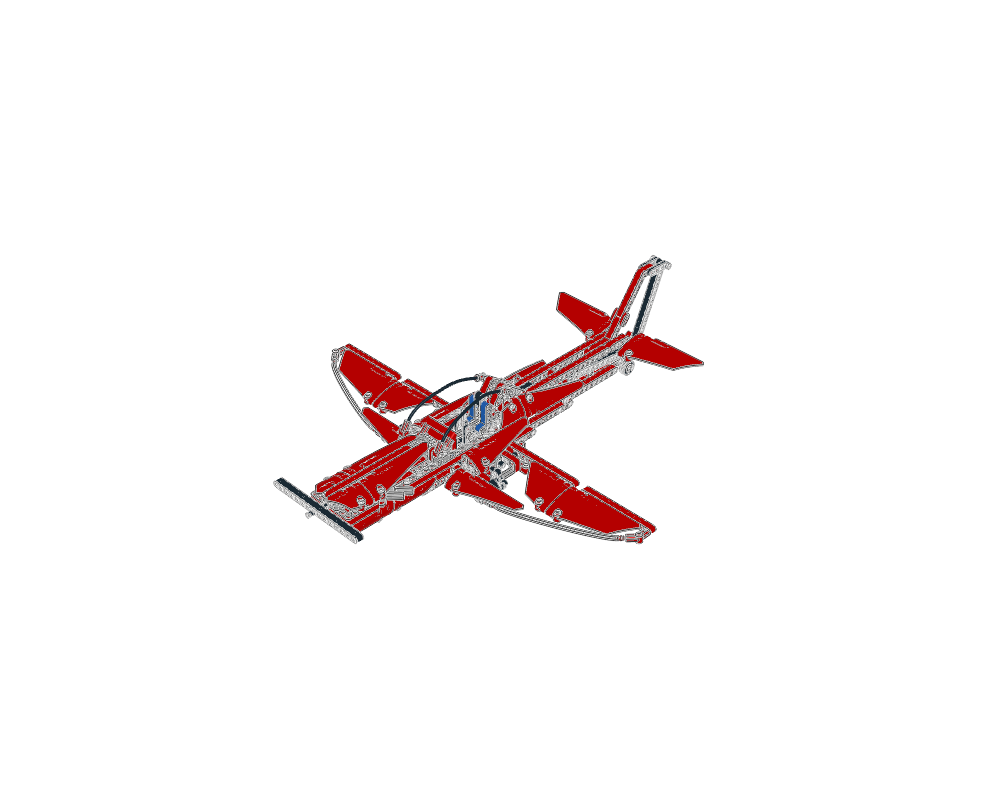
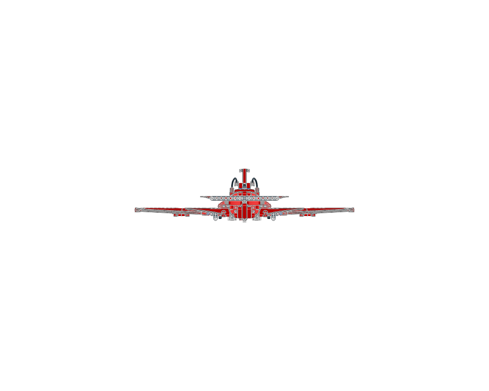
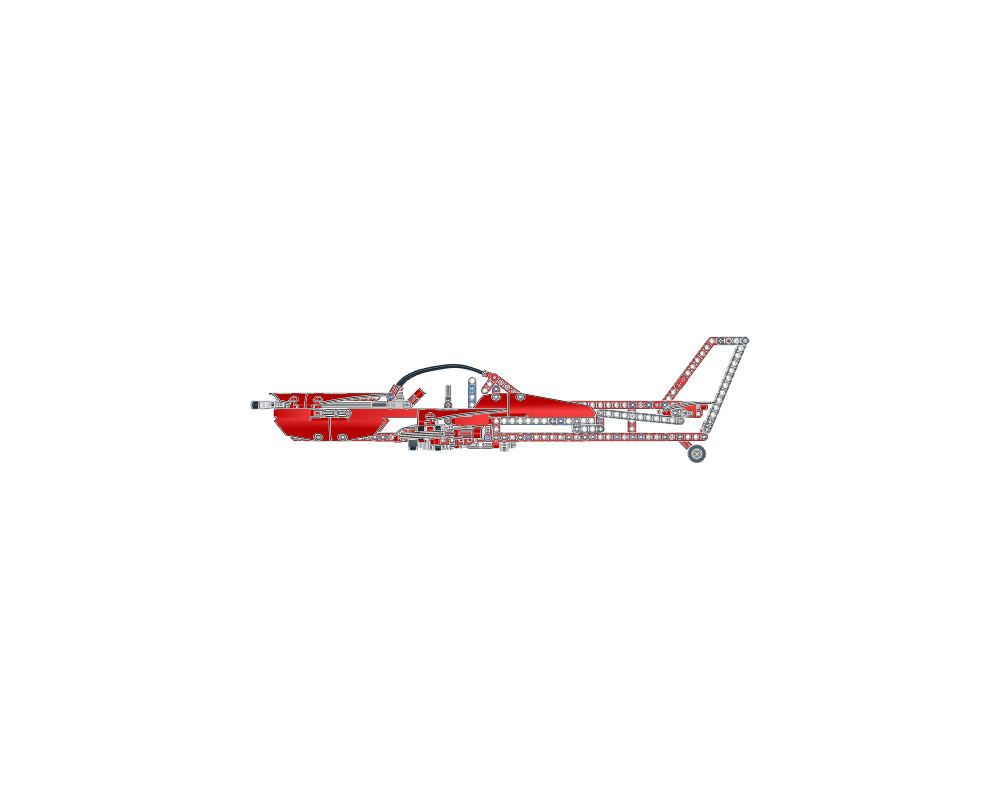
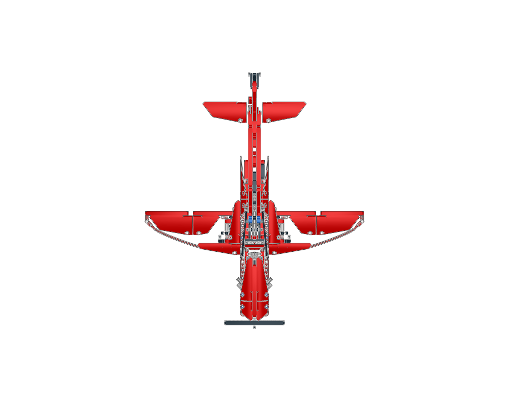
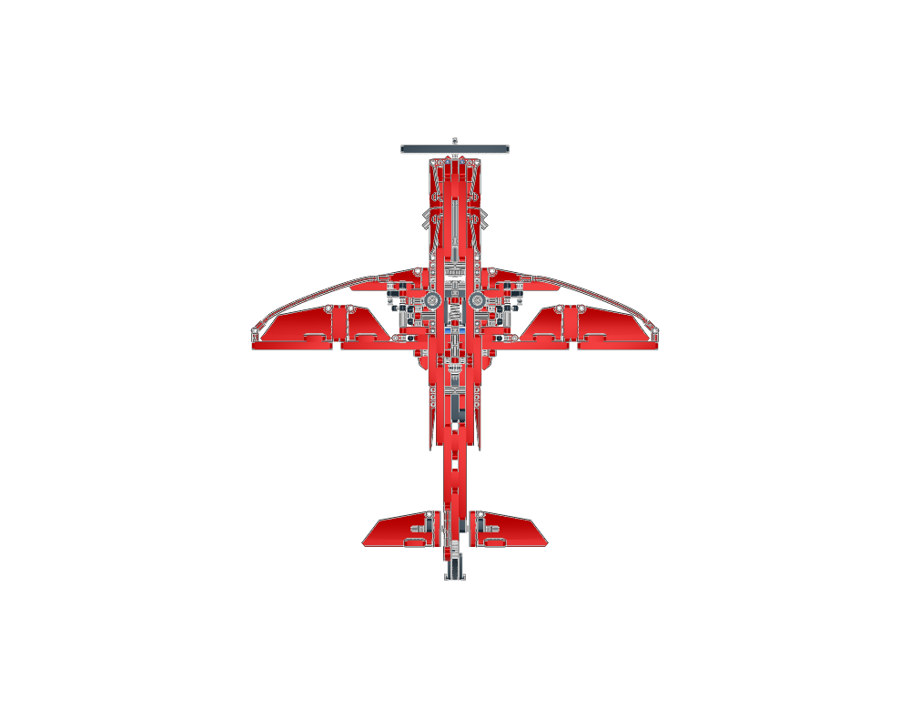
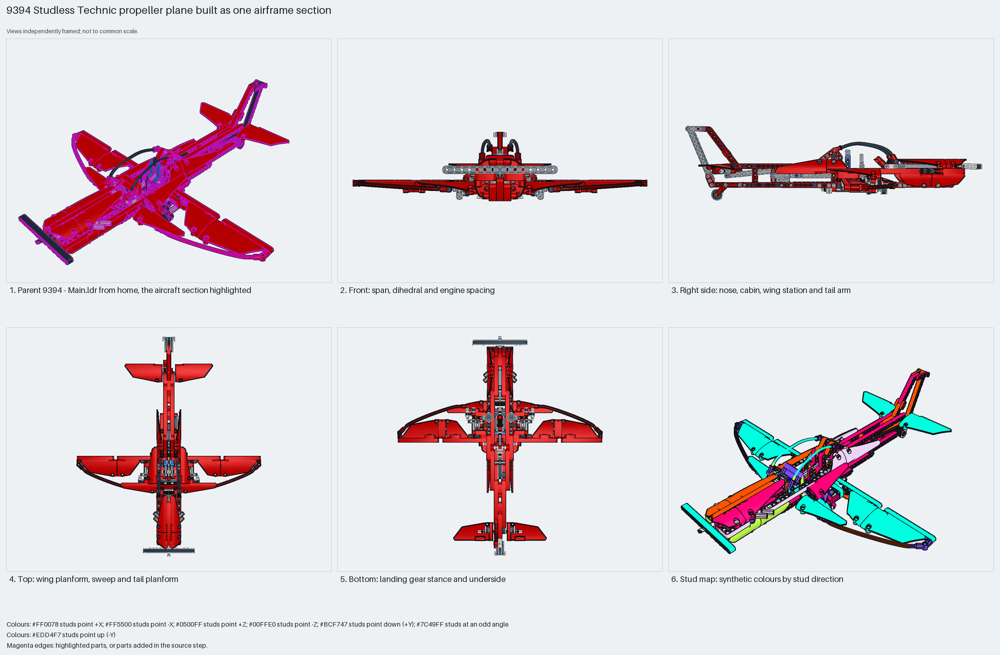

A studless Technic propeller plane kept as one section: a red liftarm fuselage and wings with white panel skins, a 15-long beam as the two-blade propeller on a worm-and-knob gear train, tricycle gear on 42610 wheels plus a tail wheel, and two LSynth flexible axles arcing wingtip to wingtip as the wing leading edges. Measured: span 54 studs, length 60, height 16, 583 placements, 66% Technic.
construction
583 placements in 68 steps in one section; the source never splits the airframe. Fuselage: red 32525, 32278 and 32524 beams with cross blocks; wings: beams with 64681/64393 panels; nose: a 4716 worm, 3648 24-tooth gear and 32072 knob gears driving the propeller beam; the LS40/LS41/LS50/LS51 LSynth flex-axle segments as the curved leading edges and cables.
interfaces
Studless: 201 up, 137 sideways, 218 angled. The `9394 - Main.ldr` wrapper places the airframe; the flex axles end in connectors at the wing tips; the gear's three wheels sit on pins and axles under the belly.
parent context
`9394 - Main.ldr` places it at the origin with the identity matrix; this is the 9394 Jet Plane's B model, built with the propeller at −Z.
reuse notes
Use it for the layout of a studless Technic trainer: length 1.1× span, low wing, tricycle gear, propeller on a geared nose axle. Inspiration only: the 163 LSynth segments use mirrored matrices, so rebuild the flex leading edges with the flex workflow.

home

front

right

top

bottom

mosaic
Sections to study separately
Use manual prepare on a selected source section to create its build pages.